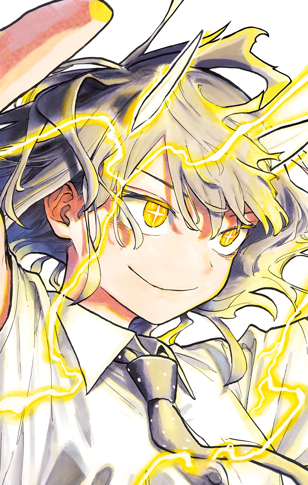
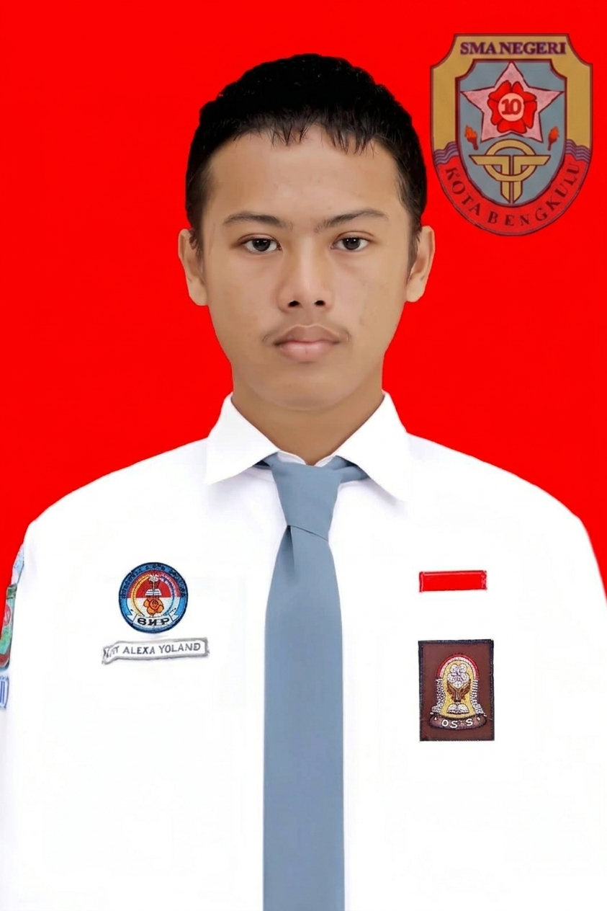
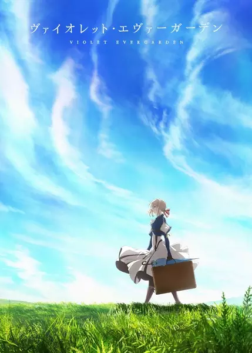
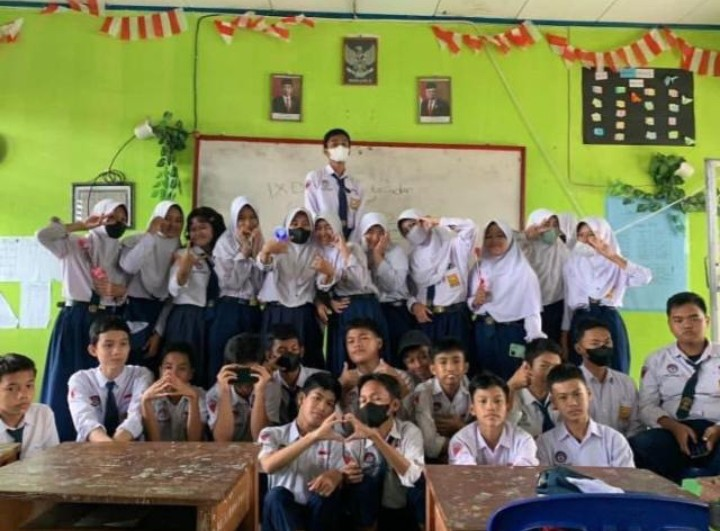
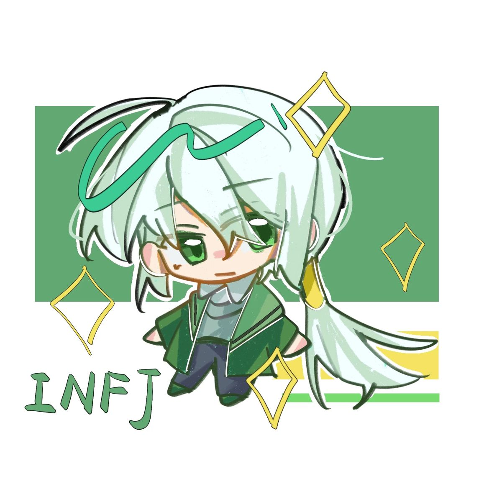
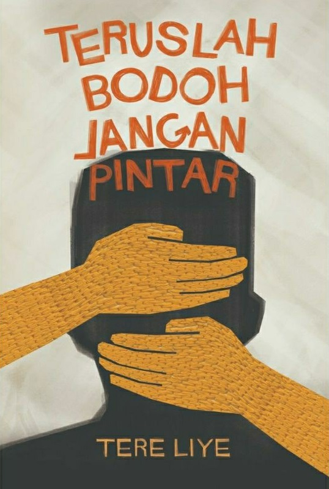
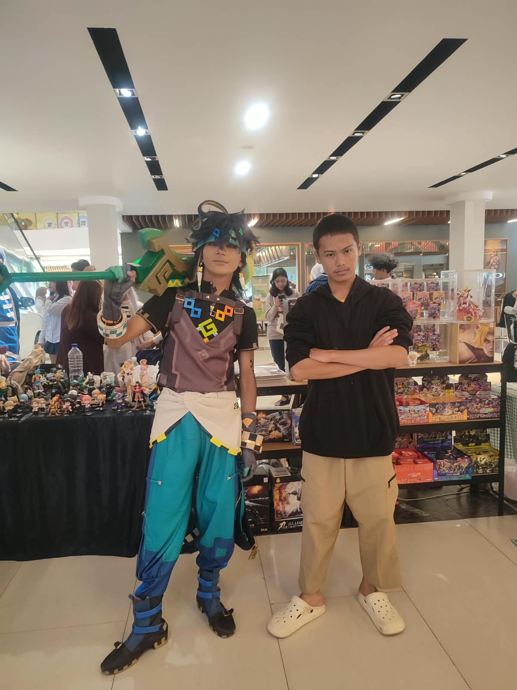
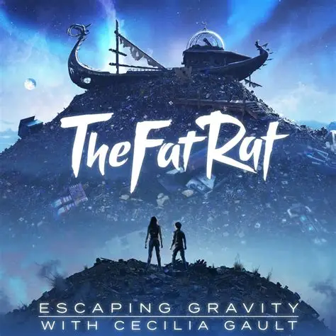
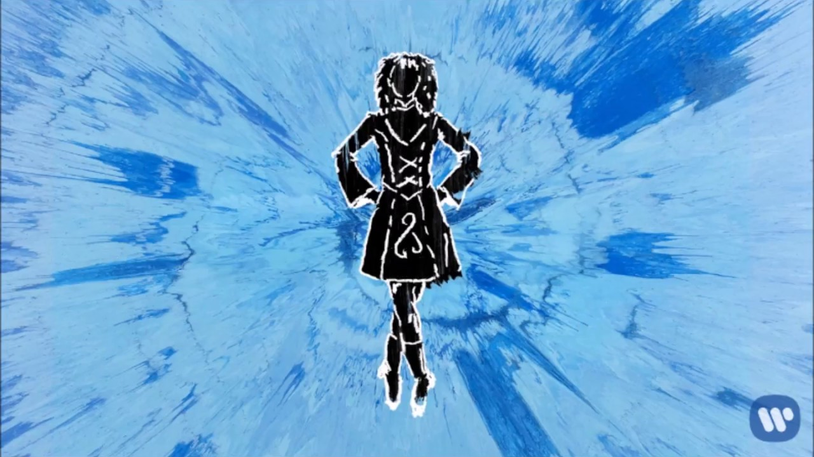

Negeri 10 Kota Bengkulu
IPA(biologo,fisika,kimia,MM tingkat lanjut)?


Siswa SMA Negeri 10 Kota Bengkulu · siswa aja
lahir tanggal 26 november(tar lagi tua wir seumur hidup)
IPA(biologo,fisika,kimia,MM tingkat lanjut)?
mineralogi(yang tau/rencan)masih mereng ke bahasa

prajurit dan

Foto bersama teman sekelas di SMP. Ceritakan kenangan atau momen yang paling berkesan.

Tulis sifat-sifat yang menurutmu paling menggambarkan dirimu.

Karya Tere Liye. Tulis kesan atau pelajaran yang kamu dapat dari buku ini.

Ceritakan pengalamanmu di acara ini dan hal yang kamu suka dari hobimu.

